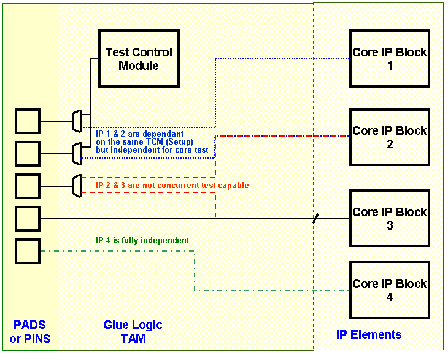
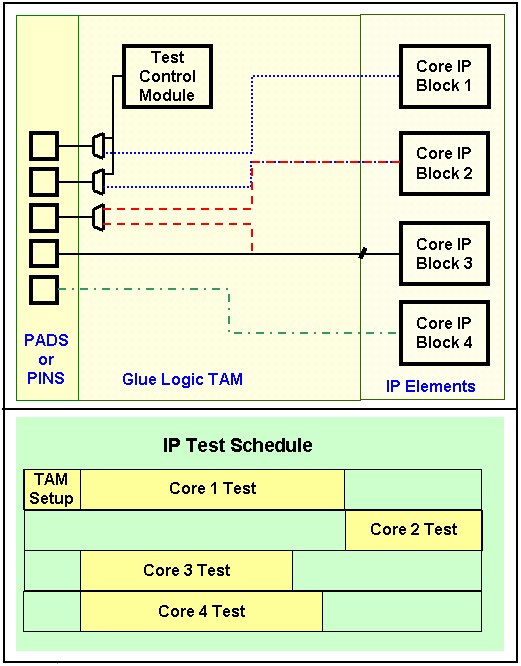
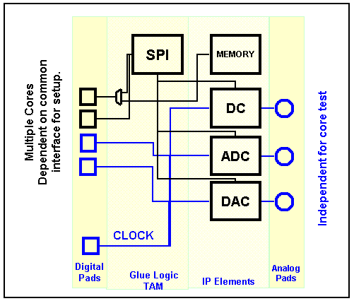
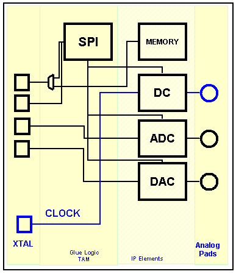

Device design for concurrent testing
When designing a DUT for concurrent testing, the following aspects should be considered:
- Crosstalk and Noise.
- IP blocks need to be able to effectively run concurrently.
- Physical layout becomes even more important to ensure isolation.
- Power Delivery.
- Simultaneous test modes can produce large current spikes.
- Concurrent test modes may challenge the overall power budget, hence package/pin power limitations should be considered.
- Secific CCT requirements which may require:
- New Design For Test (DFT) flow.
- New or modified test mode possibilities.
- Silicon Area Impact.
- May require additional Test Access Mechanism (TAM). for example, additional pads. However, using shared test ports is not possible.
- Core wrapper architecture considerations. Customized wrappers can affect both the area and routing plan in an SOC integration.
- Layout.
The following figure illustrates the effect of a limited Test Access Mechanism (TAM) on being able to perform concurrent tests.

It is important to differentiate test access control and setup from core testing.
The dependencies are judged by the sequencer resources.
- Hence, group digital pins by port
- DC Dynamic utilizes digital, port-based sequencers
- Analog units incorporate independent sequencers
The following figure shows a possible test schedule for the DUT above.

Analog Considerations
Here also you should differentiate test access control and setup from core testing.
The following figure shows an example of a chip containing multiple cores dependent on a common interface for setting them up but independent for individual analog core tests.

Clock Considerations
Traditionally, you modify the IP Clock for the specific Core Tests sequentially and respect clock dependence for other cores, such as the ADC/DAC sampling clock, which is based on the communication processor's control.
Optimally, you have independent clock control of each IP block with all clocks based on simple integer multiple of each other.
The goal is to optimize the internal clock distribution and control.

Functional changes
- Introduced before SmarTest 6.3.2